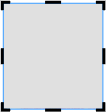

Operações de imagem e caráter |
Selecionar
Clicar (ou tocar) em uma imagem ou caracter.
Ao selecionar um objeto, um item da interface é apresentado ao redor dele.
Mover, deformar, rodar
 Modelos dedicados a uso com impressão a cores/Modelos dedicados a uso com corte
Modelos dedicados a uso com impressão a cores/Modelos dedicados a uso com corte

Modelos dedicados a uso com impressão em metais/Modelos dedicados a uso com impressão de películas

 |
: Move o objeto. |
| A posição é ajustada automaticamente para alinhar com a parte superior, inferior, esquerda ou direita do outro objeto a ser movido. Os objetos só podem ser alinhados com a mesma aresta (exemplo: superior e superior). Se deseja colocar objetos livremente, desmarque a caixa de seleção "ORIENTAÇÃO". |
|
| : Altera a forma do objeto. | |
 |
: Roda o objeto. |
 |
: Aumenta/reduz o tamanho do objeto com a respetiva proporção mantida. |
 |
: Ative isto quando não desejar alterar a posição ou tamanho do objeto. |
 |
: Utilize para ocultar as partes da imagem que não pretende imprimir (só é apresentado para imagens). Quando ativa esta funcionalidade, é apresentado um item da interface para corte à volta da imagem.  |
 |
: Faça ajustes em itens como o brilho da imagem e defina as configurações relacionadas com o contorno. (Isso é exibido para modelos dedicados ao uso com impressão em metal e para modelos dedicados ao uso com impressão de películas.) |